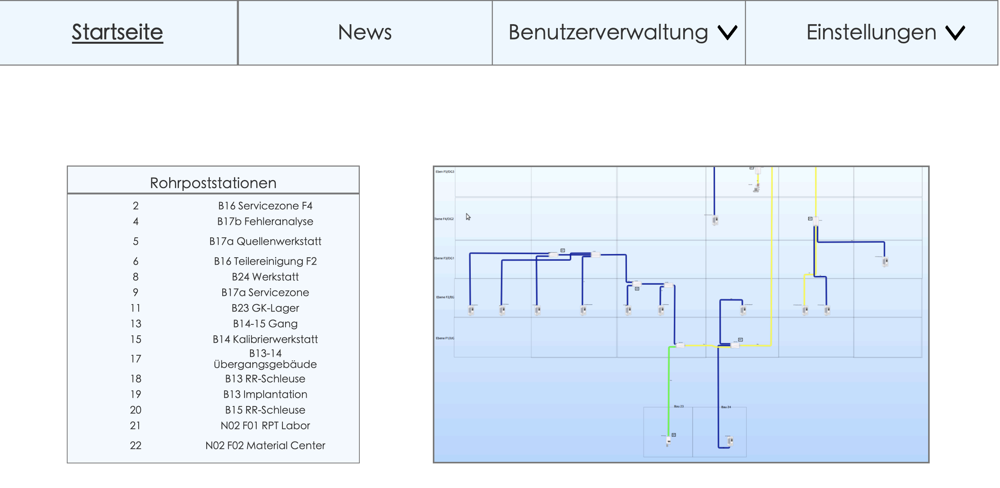
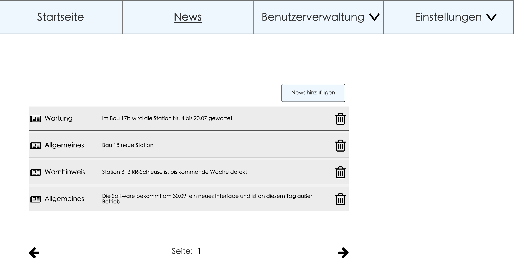
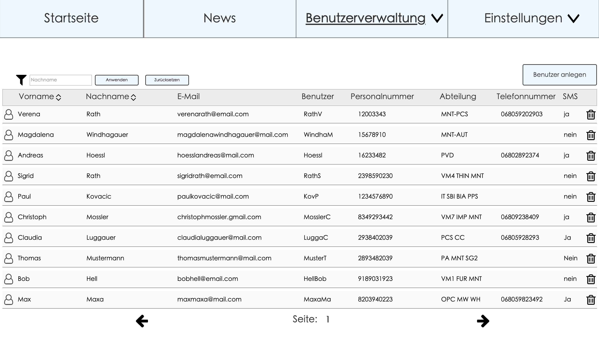

Rohrpost – Prototype
Short Description
This was one of my first prototypes I had to make for a course at Uni in my bachelors.
During that time I was working at Infineon and had to work with the internal Rohrpost system.
Since I didn't like how it looked I wanted to use this course to improve the design,
to make it more clearly arranged and easier to add new users.
Screens
Homepage and the navbar of the application:

I have created a screen for messages so that we know if maintenance work is taking place or something good to know:
It should also be possible to add news:

The most important part was to make the user overview, to help us users to find users faster:
It was also a goal to make it easier and fast to add new users to the system: